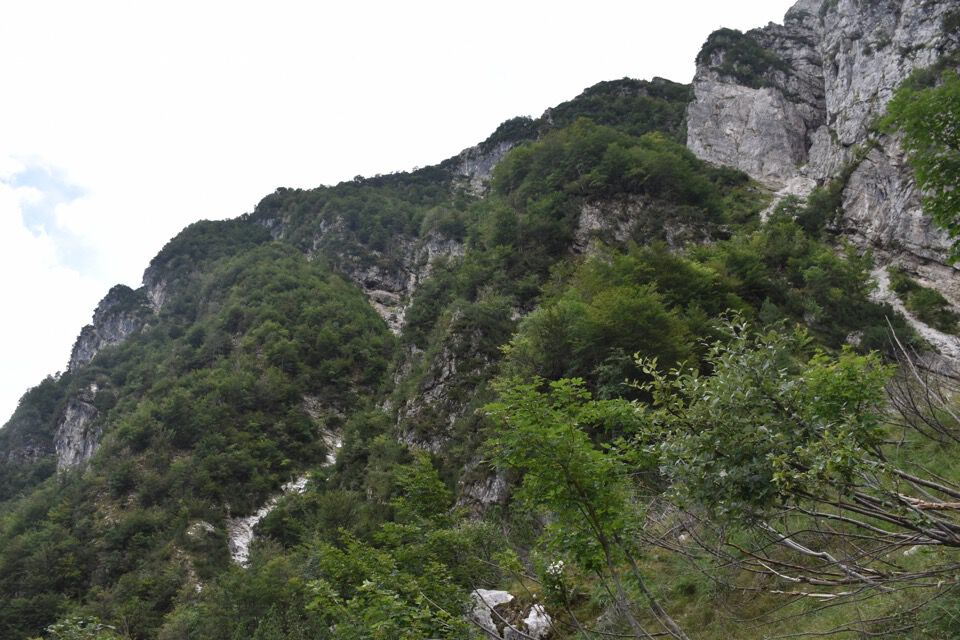

La prima volta che entrai nel vallone di Serai rimasi affascinato da quelle due torri (q1436.8 e q1425.4 CTRN) che si ergono sopra il vallone. Studiando la questione mi accorsi dell'esistenza di un'erta pala, con attacco molto ripido, che conduce su un'ampio cengione sotto le Pale di Misdì e la cima Clapadorie. Qualche mese più tardi, col binocolo dalla cima del Monticello, ecco che vedo che un possibile passaggio dal cengione alla forcella a Nord del Palòn!
Fotografato e guardato poi molte volte, dal Pisimoni, dal Cuel da la Ceit, dal Cimadôrs, ecc., la convinzione che la cosa fosse fattibile era sempre più alta, ma bisognava provare. Così un giorno di settembre io e Ivan siamo partiti da Povici per realizzare il progetto: ne è uscita una bellissima salita di sei ore in ambiente assolutamente selvatico e solitario.
Per me si tratta davvero di una grande soddisfazione: lo studio ripaga sempre.
Ringrazio Anna Maria Beltrame di Resiutta che, interrogata sulla questione, tramite amici cacciatori mi ha fatto sapere che il toponimo risale al periodo estrattivo della miniera del Resartico e si riferisce al soprannome di una delle famiglie di Povici (esattamente Zábus, poi trascritto erroneamente in Zapus). Mi dice che «Qualche erede dei Zabus è tuttora vivente e risiede a Povici. Tutti i boschi della zona ai tempi della miniera erano in gestione diretta dal comune di Resiutta; dietro semplice domanda in comune, i residenti potevano sfruttare il legname (principalmente faggio), quindi si può pensare che tutta la conca sia stata sfruttata dai residenti per il taglio dei boschi; usando il soprannome si identificava l’area di taglio del legname».
Dopo mezz'ora su e giù per Povici decidiamo di rinunciare al guado del Resartico e di prendere il ponte: in quattro e quattr'otto siamo a Borgo Cros, dove la vista si apre su tutto il vallone di Serai.
Ci lasciamo Borgo Cros alle spalle, col suo guardiano.
È la terza volta che percorro il sentiero del vallone di Serai, e anche questa volta ho approfittato per pulirlo un po'.
L'affascinante e selvaggia testata del rio Serai.
La vista verso la val Alba è molto interessante: mitico Pisimoni col suo antro!
Riconosco il cengione che ho salito con Greta per andare sulla Punta Salvotis.
Subito dopo uno zoccolo con un passaggio molto ripido, dove è bene avere la corda in discesa, ecco un'ottima traccia di camosci.
Basta seguire i sentieri degli ungulati, non è difficile.
Ormai prossimi al culmine dello sperone q1436.8 CTR.
Andiamo a visitare quel clapusç in centro foto, che più che altro è un gabinetto per camosci...
La Costa Pulize - continuazione della cresta Nord di Punta Agarone - che sale verso le creste (cima Clapadorie). C'è pure una relazione del moggese Gino Franz su In Alto 1927.
Finalmente sbuchiamo sull'ampio cengione Nord sotto Pale di Misdì e cima Clapadorie: era da più di un anno che sognavo di arrivare qui!
Ho un po' d'ansia a vedere il Palòn da qui, dato che dalle foto a distanza non ho mai avuto questa angolazione...
...ma l'unica cosa che preoccupa è l'evidente friabilità della cengia.
Studiata a lungo, non avevo dubbi che questa cengia fosse percorribile: che sollievo a vedere quella bella traccia dei selvatici!
Qua ce n'è da esplorare!
Passiamo trattenendo il fiato!
Si tratta della forcella a Nord del Palòn dei Zábus (forcella del Palòn?), che qui vi mostro vista dal lato opposto; il canale SSE è tutto percorribile, ma per canto mio sconsigliabile.
Dalla forcella del Palòn verso il Lávara e lo Jôf di Confìn.
In un post precedente avevo scritto, riportando notizie dalla vetusta guida del Marinelli, che il canalone Nord del Lávara fosse percorribile: forse lo è se ghiacciato, ma mi vengono i brividi solo a pensarci.
Laggiù il monte Àrghine con l'antecima Nord che pure ho salito.
Che bello che si vedono gli omini di vetta!
Come temevo, la parte finale è un calvario: una giungla di mughi che mette alla prova anche i più accaniti ravanatori.
La cima è vicina ma che faticaccia!
Dopo sei ore siamo in cima.
Povici.
Il lato più severo del Plauris.
Plauris, Pale di Misdì e cima Clapadorie, con l'ampio cengione Nord su cui abbiamo transitato.
Scendiamo per la "normale": troviamo altri tagli, più vecchi, rispetto a quelli che avevo fatto io la prima volta.
Ma arrivati al bosco di faggi la via va conosciuta, perché la pala Sud termina con enormi salti sopra il Resartico.
Lassù la forcelletta di Vetta Criuze, con il suo caratteristico pino cembro.
Foto di repertorio: il suddetto pino, con dietro il monte Pléchie, con colori autunnali che più belli non si può.
Di qua l'arditissimo cengione di collegamento con le miniere alte del Resartico, ad uso esclusivo dei camosci.